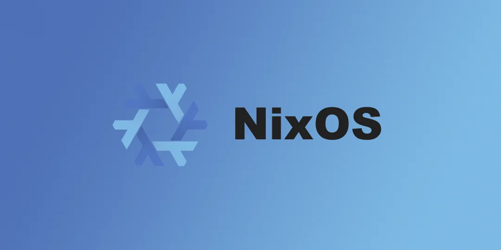

Nix Package Manager
Nix is a tool that enables reproducible package build in isolation allowing package's to be install on any Linux based operating system including Mac OS.

Install
To install NixOS for multiple users run the following command:
1sh <(curl -L https://nixos.org/nix/install) --daemon
NixOS recommends installing the Nix package manager as a multi-user installation as it provides better build isolation, better security, and the ability to share downloads between users. To see the full explanation click here
Configuration
Once Nix is installed you will need to refresh your terminal, you can do that by running the command reset.
To configure Nix you can edit the nix.conf file:
1nano .config/nix/nix.conf
I recommend enabling nix-command and flakes before you start working with Nix. nix-command allows you to run commands less verbosely and flakes lets you search for packages in the terminal. To enable these experimental features paste the following line in the nix.conf file.
1experimental-features = nix-command flakes
The syntax for searching packages is as follows:
1nix search nixpkgs <package name>
Installing Packages
If you are not a fan of using the terminal search feature Nix also has a website where you can see all 80,000 packages. If you use the web search Nix will provide you with the installation instructions in the results.